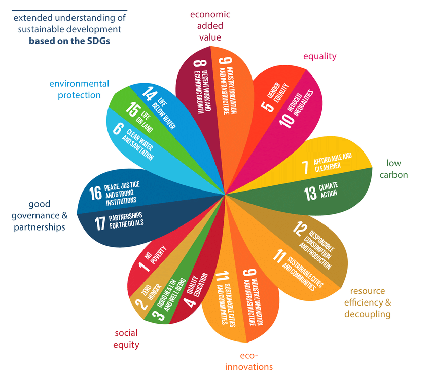

Fentarthatóság
A fenntartható fejlődés (sustainable development) olyan fejlődési folyamat, ill. szervezési elv, ami „kielégíti a jelen szükségleteit anélkül, hogy csökkentené a jövendő generációk képességét, hogy kielégítsék a saját szükségleteiket”, ahogy az az Egyesült Nemzetek Szervezetének 1987-es Brundtland-jelentésében szerepelt. A fenntartható fejlődésnek fenn kell tartani a természetes rendszerek, források összességének azon képességeit, amelyeken a természet és a társadalom alapszik. A másik tényező, amit le kellene küzdenie, a környezet elhasználódása, de ezt úgy kell elérnie, hogy közben ne mondjon le sem a gazdasági fejlődés, sem a társadalmi egyenlőség és igazságosság igénye

A fogalom a nyolcvanas évek elején jelent meg nemzetközi szinten, a szociális valamint a környezeti problémák felismerését, ezen problémák összefüggését a gazdasági fejlődéssel jelenti. Ezen problémákat nem lehet külön vizsgálni, hanem csak sajátos módon együttesen megközelítve. A téma általános ismertséget Lester R. Brown 1981-ben megjelent „Building a Sustainable Society” című műve váltotta ki.
Fentarthatóság elvi alapja:
Életrendünk akkor fenntartható, ha anyagforgalma körkörös, azaz illeszkedik a természet rendjébe. A fenntarthatóság elsősorban a népességre jutó erőforrásainktól függ. A fizika egy alapvető állítása szerint folyamatok körfolyamatokká alakíthatóak, ha kívülről elég energiát viszünk be a rendszerbe. Körfolyamattá alakítás során a bevitt energia részben hulladékhővé, üvegházhatású gázokká, kibocsátott vegyszerekké alakul, mert a körfolyamatok nem 100% hatásfokúak. Elvileg bármilyen gyártási eljárás és az azt követő felhasználás energia szempontjából körfolyamattá zárható, amennyiben van elég energia, és a hulladékhőt le tudjuk adni, a hulladék anyagot újra tudjuk használni. Bőséges erőforrások, energia és alapanyag birtokában életrendünk (az emberi tevékenység) ehhez hasonlóan fenntarthatónak tekinthető, ha a folyamatok (anyagi, nem energia jellegű) termékeinek és melléktermékeinek, hulladékainak felhasználását zárt körfolyamattá tesszük (újrahasznosítás, recycling). Mindezek egy bizonyos környezeti állapot (klíma, meteorológiai viszonyok, CO2-O2 egyensúly) geológiai adottságok (bányászat, víz, mezőgazdasági terület) mellett, bizonyos, ezzel arányos népesség mellett volnának elvileg lehetségesek. Ez felelne meg egy elméleti, társadalom-természet egyensúly esetének. A természet újratermelődése és a tényleges fogyasztás arányossági jellemzője azonban ennél kevesebb, ezt mutatja a túlfogyasztás napja. A túlfogyasztás jelenleg (2022) kb. kétszeres, ami megfogalmazható úgy, hogy a népesség az egyensúlyi állapothoz képest kétszeres. A túlfogyasztás fogalmával analóg fogalom a túlnépesedés, amellyel kapcsolatban ugyanúgy felvilágosítás volna szükséges, mint a klímaváltozással kapcsolatban. Közvetlen összefüggés áll fenn, ugyanis a nagy népességű, fejletlenebb technikájú országokban az oktatás jelentős hatással van a túlnépesedésre (ösztönök). Csak a technikától várni a túlnépesedés csökkenését a jelenlegi klímavédelmi helyzetben a természet további fokozott túlterhelését jelentené.
Fogalma:
Olyan fejlődési folyamat, ill. szervezési elv, ami „kielégíti a jelen szükségleteit anélkül, hogy csökkentené a jövendő generációk képességét, hogy kielégítsék a saját szükségleteiket”, ahogy az az Egyesült Nemzetek Szervezetének 1987-es Brundtland-jelentésében szerepelt. A fenntartható fejlődésnek fenn kell tartani a természetes rendszerek, források összességének azon képességeit, amelyeken a természet és a társadalom alapszik. A másik tényező, amit le kellene küzdenie, a környezet elhasználódása, de ezt úgy kell elérnie, hogy közben ne mondjon le sem a gazdasági fejlődés, sem a társadalmi egyenlőség és igazságosság igényeiről.
A fogalom a nyolcvanas évek elején jelent meg nemzetközi szinten, a szociális valamint a környezeti problémák felismerését, ezen problémák összefüggését a gazdasági fejlődéssel jelenti. Ezen problémákat nem lehet külön vizsgálni, hanem csak sajátos módon együttesen megközelítve. A téma általános ismertséget Lester R. Brown 1981-ben megjelent „Building a Sustainable Society” című műve váltotta ki.
Erőforrások:
Világunk jelenleg jóval több erőforrást használ, mint amennyit a fenntarthatóság (természetes újratermelődés) megengedne. Ebből következően a jelenlegi gazdasági rendszer csak jelentős többlet-erőforrásokkal (mesterséges eszközökkel) képes működni. Ha ezek az erőforrások kimerülnek, a gazdaság komoly veszélybe kerülhet. Mivel az erőforrás-felhasználás 87%-át fosszilis energiahordozók képviselik, ezek fogyása rejti a legnagyobb kockázatot. A legújabb bizonyítékok alapján a könnyen kitermelhető fosszilis energiahordozókat már kitermeltük. Ezek közül is a legnyilvánvalóbb a kőolaj fogyása. E kérdésben nem is annyira az adott erőforrás, pl. kőolajmező nagysága a mérvadó, hanem sokkal inkább az, hogy meddig érdemes kitermelni az adott mezőt, ezt méri az EROEI mérőszám, tehát pl. azt, hogy egy hordó kőolaj felhasználásával hány hordó kőolaj nyerhető ki. Az adott erőforrások csökkenésére sokak szerint a technológiai fejlődés jelenthet megoldást, ám a növekedés fenntartása zárt rendszerben, mint amilyen a F öld is mindenképpen problémákat okozhat. Ugyanakkor a fosszilis energiaforrások jelentik a legnagyobb környezeti kárt, a CO2 fejlesztés miatt.
